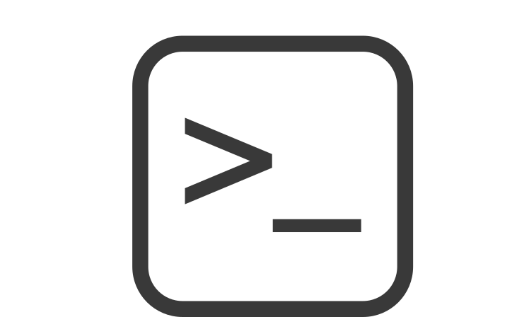
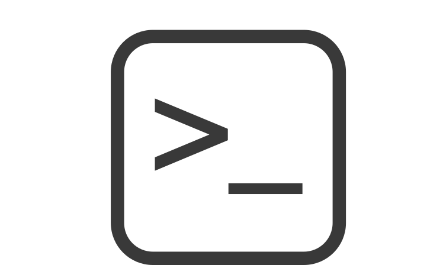

IKHLEF Mathis
Coordonnées
Adresse : 2 rue de la carriere Résidence le clos des pins
Téléphone : 07 88 43 26 51
Email : mathis.ikhlef31@gmail.com
21 ans
Diplômes et Formations
Formation Apple Foundation Program - Développement mobile iOS
De novembre 2022 à décembre 2022 Simplon Marseille rue Fauchier 13002
Sauveteur secouriste du travail Depuis janvier 2021 Ecole libre des métiers Marseille 06, France
Baccalauréat Professionnel Systèmes Numériques option réseau informatiques systèmes communicants Depuis juillet 2021 Ecole privée libre des métiers Marseille
Brevet d'études professionnel Depuis juin 2020 Ecole libre des métiers Marseille 06, France
Brevet des collèges Juillet 2017 Collège Marc Ferrandi Septèmes-les-Vallons,
Expériences Professionnelles
Placement grand public au stade velodrome
De septembre 2022 à octobre 2022
ETIC Marseille 08, France
Hôte d'acceuil au parc chanot
De septembre 2022 à octobre 2022
ETIC Marseille 08, France
Magasinier
D'août 2022 à octobre 2022
Clinique Bouchard Marseille 06, France
Stage
De novembre 2021 à décembre 2021
Action logement Marseille
Stage
De décembre 2017 à janvier 2018
Centre de rééducation balnéothérapie Marseille, France
Magasinier
de mars 2023 jusqu'en aout 2023
Hopital bouchard dans le 6eme arrondissement de Marseille
Compétences
Langages de programmation : HTML, CSS, linux
Outils de développement : Visual Studio Code,
 

Langues
Français (langue maternelle), Anglais (courant)
Visitez mon github:Cliquez ici